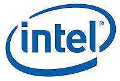

|
|
|
CLOUDBAND ECOSYSTEM
FEBRUARY MONTHLY UPDATE
|
|
|
|
Greetings,
The CloudBand Ecosystem team has had a busy month, we were happy to
see many of you at the ETSI NFV event and at Mobile World Congress. As
you’ll see in this issue, we had a lot of great announcements. We look
forward to working with all of you in 2014 to help service providers get
to NFV faster.
Take care,
The CloudBand Ecosystem Team
Valerie Noto and Debbie Bradshaw
|
|
|
|
|
|
|
SERVICE PROVIDER ANNOUNCEMENTS
|
|
|
|
Alcatel-Lucent and Telefonica to
accelerate industry shift to Network Functions Virtualization.
Co-innovation agreement to focus on advancement of Network Functions
Virtualization using the CloudBand NFV platform to speed adoption of
network virtualization infrastructure.
Learn More
|
|
|
NTT has set up
an alliance with Alcatel-Lucent Japan and Fujitsu to collaborate on
server technology to establish new technology, advance its level of
sophistication, and enable early feasibility checking of the technology.
Alcatel-Lucent Japan is one of the leading firms developing
virtualization and orchestration technologies for network server
systems, and Fujitsu has extensive experience in systematization of
distributed computing and maintaining large-scale server systems.
Learn more about this exciting collaboration.
|
|
|
|
|
|
NEW PARTNERS TO THE ECOSYSTEM THIS MONTH
|
|
|
VIRTUAL NETWORK FUNCTIONS
|
|
Saisei Networks
is a developer of flow-based network visibility and control solutions.
Saisei's software based solution enables service providers and
enterprises to have unprecedented control of their networks, achieving
dramatic savings and accelerated revenue growth. Saisei’s patented flow
control technology provides 100% real-time visibility into all network
flows at the application and user levels, advanced traffic engineering
tools that allow link utilization up to 95% without congestion, and
policy-based control of all network flows for real-time fair usage
within service tiers. Based on an open REST API, Saisei’s software
based solution operates on standard compute devices and is easily
integrated into legacy or next generation networks.
saiseinetworks.com
|
|
|
Procera Networks
delivers Internet Intelligence solutions designed for carriers, service
providers and enterprises worldwide. Procera’s PacketLogic solutions
provide actionable intelligence and policy enforcement to ensure a high
quality experience for any Internet connected devices. Network operators
deploy Procera’s technology to enable real-time visibility, superior
performance and scalability, and deliver personalized services for
millions of enterprises and consumers. Enterprises utilize Procera's
embedded NAVL solutions to ensure that they can deliver on BYOD and
Cloud services to their employees.
www.proceranetworks.com
|
|
|
|
|
|
|
|
Alcatel-Lucent, CloudBand™ leverages Red Hat Enteprise Linux
OpenStack Platform as part of its Network Functions Virtualization
(NFV) Platform
NFV solutions use virtualization technology to consolidate several
network equipment types on industry-standard high volume servers,
switches, and storage. Red Hat will be part of Alcatel-Lucent’s
CloudBand NFV platform, which offers a new way to design, deploy and
manage networking services, supporting a flexible network infrastructure
needed to move complex applications and services to the cloud.
Learn More
|
|
|

Alcatel-Lucent is expanding its collaboration with Intel Corporation
Both companies will work together to help operators worldwide improve
their time to market and operational efficiency, and to drive the
creative development of new products and services for consumers and
business customers with the use of cloud technologies.
As long-standing partners already working in the virtualization space
together, Alcatel-Lucent and Intel will combine resources and expertise
that will drive a huge leap forward for NFV in the communications
industry.
Read about it
|
|
|
|
|
|
|
RADWARE WINNER OF NFVISIONARY AWARD 2014
|
|
|
Congratulations Radware! Recipient of the first CloudBand Ecosystem NFVisionary Award presented at Mobile World Congress, 2014
Radware was presented with the CloudBand NFVisionary award at the NFV
Mixer that took place on February 25th, to a packed gathering of
service providers and ecosystem partners.
The Alcatel-Lucent NFVisionary Award recognizes companies with the
greatest impact and success in service providers get to NFV faster.
Radware received top scores for their development work and commitment to
advancing NFV deployments with the same availability and reliability
that services providers have come to expect.
|
|
|
|
|
|
|
CLOUDBAND 2.0 UNVEILED AT MOBILE WORLD CONGRESS
|
|
|
CloudBand 2.0 latest software release now available
CloudBand 2.0 NFV platform has been expanded to support greater
network control, broader open industry standard technologies, and
virtualized network functions. It integrates the Virtual Service
Platform (VSP) from Alcatel-Lucent’s SDN venture, Nuage Networks. Nuage
delivers highly automated, programmable and responsive networks in
support of IT and telecommunications applications for the cloud.
Alcatel-Lucent, aligns with the European Telecommunications Standards
Institute (ETSI), and is currently delivering on three CloudBand NFV
customer contracts and 10 trials. It has signed four contracts to
deliver its Nuage Networks SDN solution. It is committed to accelerating
industry development of NFV, both through active participation in the
ETSI NFV advisory board, as well as with the formation of the CloudBand
Ecosystem Program.
Read More
|
|
|
|
|
|
|
NFV MASHUP #5 -- YANKEE GROUP
|
|
|
NFV Mashup webinar #5 featuring Yankee Group on March 18th, 2014
NFV in Carrier Networks – Baby Steps or a Giant Leap Forward?
In this webinar we will examine the status of NFV in carrier networks
in 2014 – which applications are carriers most interested in
virtualizing and why? We will examine how service providers are
accommodating NFV in their RFPs, were they are engaging in proof of
concept trials and what applications, if any they are implementing in
production environments. We will provide our recommendations to
operators regarding best practices thus far, and present Yankee Group’s
forecasted time line for virtualized network applications.
Jennifer Pigg will share the key findings and analysis from Yankee Group.
Make sure you don't miss this one.
Register Now
|
|
|
|
|
|
|
|
|
ETSI NFV#5 in Malaga Spain was a great success
The fifth meeting of the ETSI Network Functions Virtualization
Industry Specification Group (ETSI NFV ISG) marked the one year
anniversary of NFV, and a significant turning point for the
organization.
ETSI members and delegates descended upon one of the oldest, and
southernmost large cities in Europe- Malaga, Spain for NFV#5, as the NFV
ISG took another step towards implementation. Interest in NFV remains
sky high; meeting participation was capped at 250, and over-subscribed,
for the capacity of the venue. The event was co-sponsored by
Alcatel-Lucent and Telfonica.
Read the ETSI blog
|
|
|
|